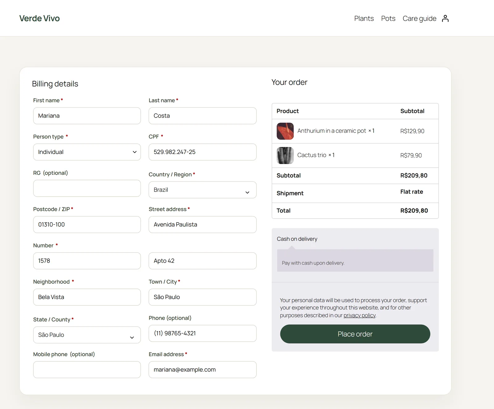
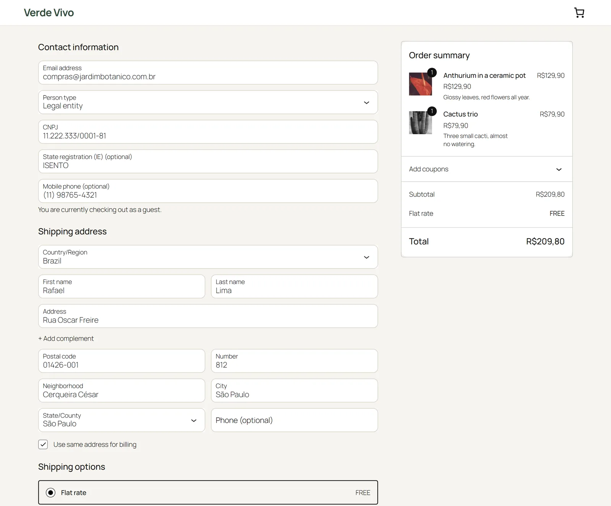
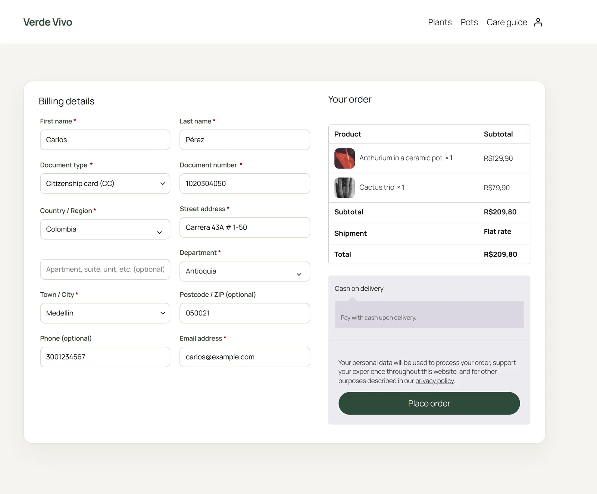
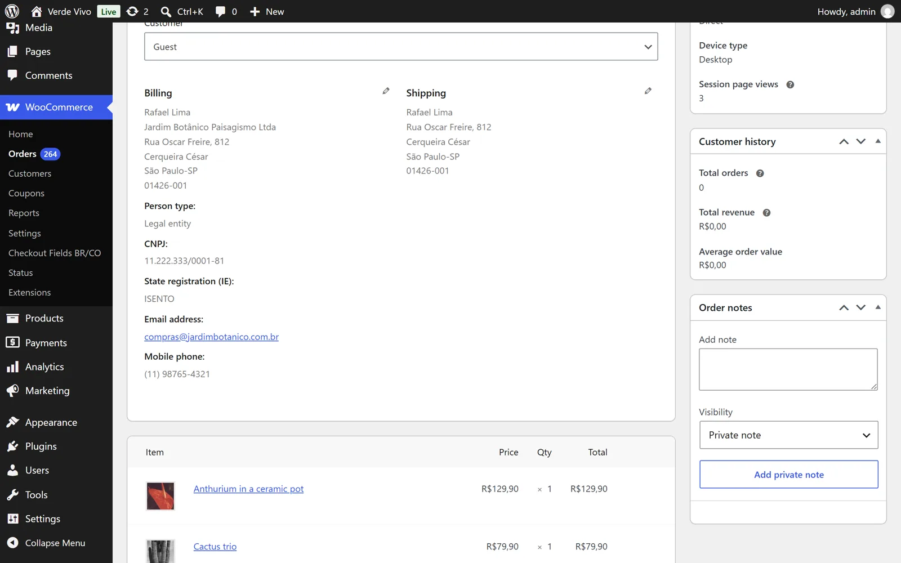

The checkout fields a store in Brazil or Colombia actually needs.
WooCommerce ships with a generic address form. Selling in Brazil or Colombia needs the customer's tax ID, the street number as its own field, the neighborhood, and city lists that match what carriers and invoicing systems expect. HeroBytes Checkout Fields adds exactly those fields and nothing else, and only when the customer picks Brazil or Colombia.
Finished and waiting for its turn in the WordPress.org review queue (the directory reviews one plugin per author at a time). Until it is listed, write to sebas152000@gmail.com and you will get the zip.

Brazil
- Person type (individual or legal entity), or a fixed type if you only sell to one of them.
- CPF and CNPJ with check-digit validation. The new alphanumeric CNPJ (issued from July 2026) is supported.
- RG and State registration (IE), optional or required. Exempt companies can type ISENTO.
- Number and Neighborhood (bairro) as separate fields, in both the billing and the shipping address.
- Mobile phone (celular), optional, required or hidden.
- CEP first: the postcode field comes before the street, and the street, neighborhood, city and state are filled in from the CEP, from the customer's browser (ViaCEP; can be turned off).
- Company name is required for legal entities. Input masks: 000.000.000-00, 00.000.000/0000-00, 00000-000, (00) 00000-0000.
- Addresses are printed the Brazilian way: Rua Exemplo, 123 / Bairro / Cidade-UF / CEP.

Colombia
- Document type (CC, CE, NIT, TI, passport, PEP, PPT) and document number. NITs are checked against their verification digit and stored as 900123456-7.
- Department before city, and the city chosen from the official DIVIPOLA list of the 1,122 municipalities of the selected department. The list ships with the plugin; nothing is downloaded. The DANE city code is stored with the order for carrier integrations.
- Company name is required when the document is a NIT. Postcode optional, as it is rarely used in Colombia.

Switching from "WooCommerce Extra Checkout Fields for Brazil"
Same meta keys, so your payment, invoicing and shipping plugins keep working.
Payment gateways, invoicing (NF-e) and shipping plugins for Brazil read the order meta keys made popular by WooCommerce Extra Checkout Fields for Brazil (Brazilian Market on WooCommerce): _billing_persontype, _billing_cpf, _billing_rg, _billing_cnpj, _billing_ie, _billing_cellphone, _billing_number, _billing_neighborhood, _shipping_number, _shipping_neighborhood. This plugin stores its data under those same keys, on orders and on customer profiles, so you can switch without losing data or breaking integrations. Colombian fields use _billing_document_type, _billing_document, _billing_divipola and _shipping_divipola.
The fields also appear in My Account, in the admin order screen (editable), on the order received page and in every order e-mail. High-Performance Order Storage (HPOS) compatible.

Questions
Do the fields appear for customers from other countries?
No. They show up only when the selected country is Brazil or Colombia, and the Brazilian or Colombian fields are not required for the other country. A store that sells worldwide keeps its normal form for everyone else.
Does it send data anywhere?
No tracking, no accounts, no calls from your server. The only optional external service is ViaCEP, called from the customer's browser with the CEP alone to fill in the address; turn it off in the settings and the checkout works completely offline.
Which WooCommerce version?
WooCommerce 10.0 or later, WordPress 6.5 or later, PHP 7.4 or later. Tested with the classic shortcode checkout and the Checkout block.
Can I add my own fields with the same rules?
Yes: the cfbc_fields filter lets you change labels, requirements or priorities, or add fields that follow the same storage and display rules.
Is anything locked behind a paid version?
No. Every option works in the free version. A paid companion for stores selling across Latin America (Mexico, Argentina, Chile, Peru and invoicing extras) is in preparation.
Support
Write to sebas152000@gmail.com, in English, Spanish or Portuguese. A reported bug becomes a new version, usually within a week.